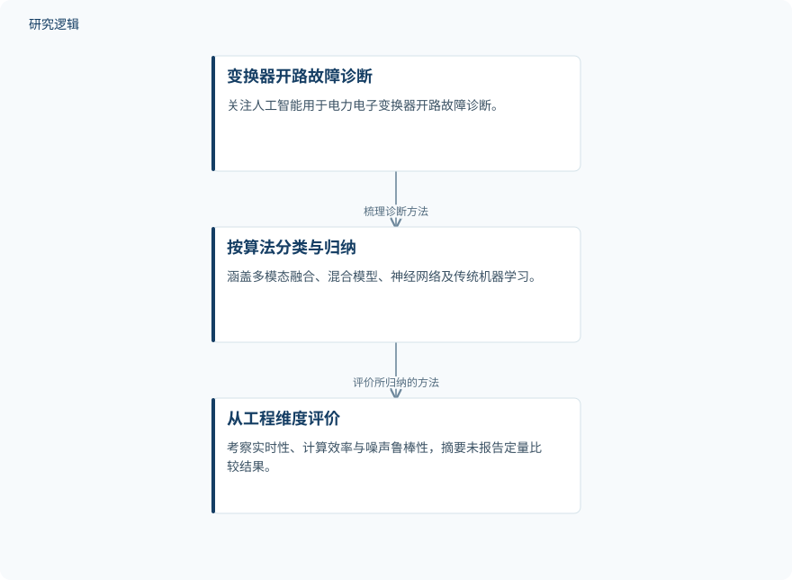

摘要解读
人工智能技术用于电力电子变换器开路故障分析的综述
A Review on Open Circuit Failure Analysis of Power Electronic Converters Using AI Techniques.
解读更新 2026-11-08 10:00 · 依据公开摘要整理，未核验全文细节
电力电子变换器发生开路故障后，如何识别并定位故障，关系到系统的稳定运行。这篇综述从算法分类和工程评价维度梳理人工智能诊断方法，阅读价值在于建立方法选择的框架，而不是提供一个已经证明最优的模型。
文章目录
开路故障诊断为何关系系统稳定
电力电子变换器是现代电力系统的重要组成部分。摘要将系统稳定运行与变换器故障的定位、识别联系起来，并把开路故障诊断作为讨论对象。文章关注的是人工智能如何服务这一具体问题，而非泛泛讨论智能运维的全部应用。
按算法归类，再看工程适用性
这是一篇综述，摘要明确的方法是从算法角度对故障诊断技术进行系统分类与总结。覆盖范围包括多模态融合、混合模型、神经网络，以及传统机器学习；其中列举了卷积神经网络、循环神经网络、支持向量机和极限学习机。
在分类之外，文章还从实时能力、计算效率和噪声鲁棒性评价这些方法。理解其组织方式的关键，是把“采用何种算法”与“能否满足应用要求”分开阅读，而不是仅凭模型名称判断技术价值。
依据摘要整理的综述组织示意


概括摘要明确陈述的分类、评价与展望环节，仅表示综述组织关系，不是论文原图或实验流程。
下载 SVG图示关系说明
实线表示相邻阶段的信息流，虚线表示跨阶段联系或反馈。
分类与总结诊断方法 → 从工程维度评价：对所述方法进行评价；从工程维度评价 → 讨论未来可能性：进一步讨论展望
摘要给出了评价框架，未给出性能排名
摘要报告的主要内容，是对多类人工智能诊断方法的归纳，以及围绕实时性、计算效率和噪声鲁棒性的评价。它没有给出各类方法的具体评价结果，因此不能据此认定某类神经网络优于传统机器学习，也不能认定融合方法必然更稳健。
文章还讨论了人工智能故障诊断的未来可能性与建议方向，目标指向变换器系统可靠性和经济性的改善。这些是发展目标，不能改写成已经验证的改善效果。
样本、比较条件与验证范围仍待核对
仅凭本次摘要，无法判断综述纳入研究的数量、检索与筛选过程，也无法确认相关研究的数据来源、样本规模、变换器类型及故障工况。不同方法是否在一致条件下比较、是否经过硬件或现场验证，同样不能确定；这些信息未在摘要报告，不等于论文没有涉及。
本次提供的摘要末句不完整，不能据此补写其结论。上述解读仅限摘要可确认的内容，不代表已经阅读全文，也不足以形成具体算法的工程选型结论。
阅读启发：沿评价条件理解算法选择
阅读启发：后续阅读可重点核对，实时能力对应怎样的诊断时限，计算效率基于何种运行平台，噪声鲁棒性又在什么条件下评价。对于智能运维读者，这些问题有助于辨别不同研究结论的适用边界，也能避免将面向可靠性与经济性的愿景误读为落地证据。
以上为本站阅读启发与建议，不是论文已验证的结论。